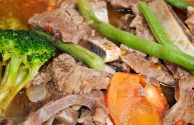

FEATURED MEAL SETS
Creat your meals with ingredients that make can be found KCC Grocery
ADOBO

Adobo refers to a method of marinating and stewing for any cut of meat or fish in a briny mixture of vinegar, soy sauce, and spices.
SINIGANG
Sinigang is often composed of a type of meat or fish, vegetables, tomatoes, and tamraind flavoring, For example sinigang can be cooked with beef, chicken, pork spare ribs, shrimp, or even fish, but more commonly it is cookied with pork.
PINAKBET

Pinakbet is made from mixed vegetables steamed in fish or shrimp sauce.
Health & Safety Rules
Stay away from close contact with people however much as could be expected when getting food, staple goods, or different things at eateries or markets. This secures both you and the laborers at the cafés or supermarkets carrying the things to you.
Know some recipes?
Go ahead and share them to our email found below. Sharing how you cook your meal enables people to explore their cooking and try out new flavors. This is delighfult specially to the ones who wants to try a new taste